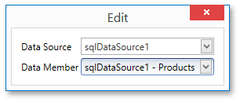
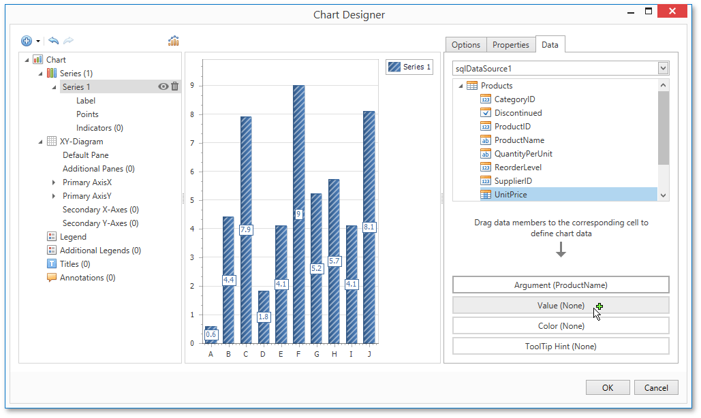
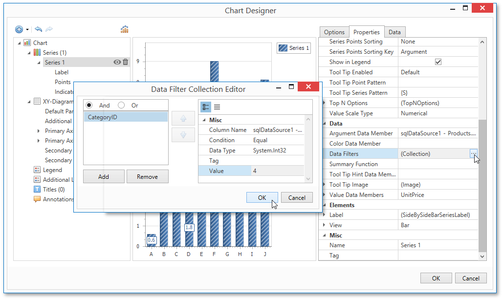
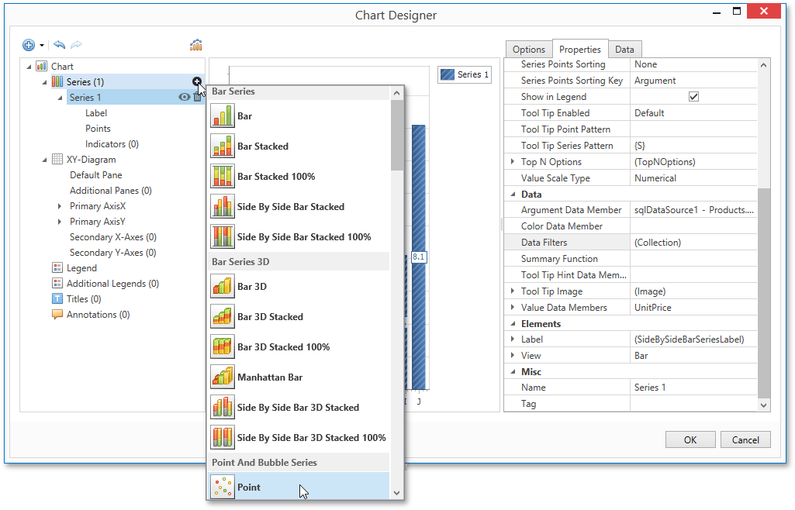
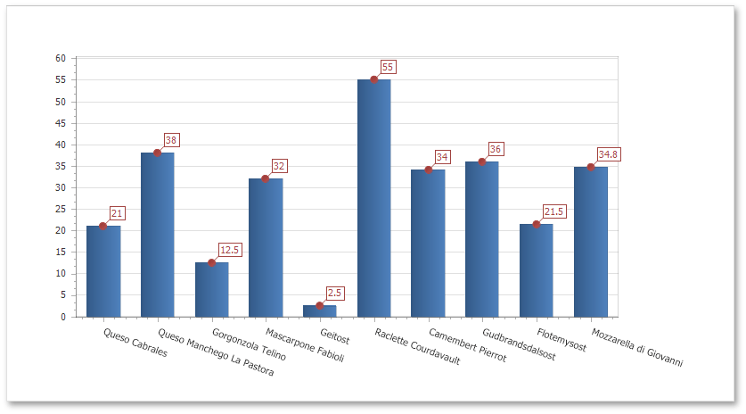

Chart with Static Series
This document describes how to create a report with a Chart control bound to data, so that a particular series has its own data source, and other settings. To simplify the example, both series obtain their data from the same data source. However, different data sources can be used for different series, if necessary.
This example describes how to construct a chart of products and their prices for a chosen category.
To adjust a Chart by manually creating its series, do the following.
Drop the Chart control from the Toolbox onto the report's Detail band.

After you drop the Chart, the Chart Designer is automatically invoked. At this step, click Cancel to close the Designer, it will be used later.
To bind the Chart to a data source, right-click it and select Edit... in the context menu. Then, in the invoked dialog, expand the Data Source drop-down and click Add New.

The invoked Data Source Wizard will guide you through the process of assigning a data source to the Chart. For detailed instructions on the Wizard's steps, refer to Binding a Report to Data, as this process is similar.
After the data source is created, it is assigned to the Chart's Data Source property. Its Data Member property defines from which table or view of your data source the Chart obtains its data.

Note
Since you have placed the Chart in the Detail band, the report's Data Source property should not be set. Otherwise, the Chart will be repeated at the preview as many times as there are records in the data source.

Once again, right-click the Chart and select Run Designer... in the context menu.

The invoked Chart Designer already contains one series of the Bar view type. To populate the series with points, select it in the tree and switch to the Data tab at the right of the designer's window. Choose an existing data source in the dedicated drop-down list. Then, drag-and-drop the required data fields to the Argument and Value cells to define the coordinates for series points.

Go to the Properties tab to see that the Argument Data Member and Value Data Members settings are automatically assigned to the corresponding fields.
In addition, you can filter the series data. To do this, click the ellipsis button for the Data Filters property, and in the invoked dialog, create and adjust the filtering criteria.

To save the changes and quit the dialog, click Close.
Create one more series with the same settings, but select the Point view type. To do this, locate the Series element in the chart elements tree and click the plus button. In the invoked list of series types, select the required type.

Finally, to improve your Chart's appearance, you can make the following adjustments.
- Remove the Chart's legend as it shows the same data for both series. To do this, select the Legend in the chart elements tree, and in the Options tab, set the Visibility property to No.
- The point labels for Series 1 are unnecessary, so select the Label node under this series and disable the Labels Visibility check box.
- Rotate the X-axis labels for better readability. To do this, select the Axis X item, and in the Properties tab, adjust settings for labels using the Label property. For instance, set the Angle property to 20 and the Antialiasing property to Yes.
If required, it is possible to customize many other properties for the Chart, which are not described here.
The chart is now ready. Switch to the Print Preview and view the result.
